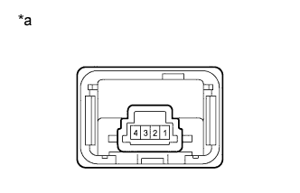

СИСТЕМА КУРСОВОЙ УСТОЙЧИВОСТИ (для моделей с гидравлическим усилителем тормозной системы) > Контрольная лампа системы помощи при спуске по склону не включается |
| 1.ПРОВЕРЬТЕ ЛИНИЮ ПЕРЕДАЧИ ДАННЫХ CAN |
Выключите зажигание.
Подсоедините портативный диагностический прибор к DLC3.
Включите зажигание (IG).
Включите портативный диагностический прибор.
Выберите "CAN Bus Check" (проверка шин CAN) в меню "System Selection" и следуйте подсказкам на экране, чтобы проверить шину CAN (для моделей с левосторонним рулевым управлением и системой посадки и запуска Нажмите здесь, для моделей с правосторонним рулевым управлением и системой посадки и запуска Нажмите здесь).
| Результат | Следующий шаг |
| OK | А |
| NG (для моделей с левосторонним рулевым управлением и системой посадки и запуска) | B |
| NG (для моделей с правосторонним рулевым управлением и системой посадки и запуска) | C |
|
| ||||
|
| ||||
| А | |
| 2.ПРОВЕРЬТЕ DTC |
Проверьте коды DTC (Нажмите здесь).
| Результат | Следующий шаг |
| DTC не выводится | А |
| DTC выводится | B |
|
| ||||
| А | |
| 3.ПРОВЕРЬТЕ ПЕРЕКЛЮЧАТЕЛЬ СИСТЕМЫ ПОМОЩИ ПРИ СПУСКЕ ПО СКЛОНУ |
Снимите переключатель системы помощи при спуске по склону (Нажмите здесь).
|  |
Измерьте сопротивление в соответствии со значениями, приведенными в таблице ниже.
| Контакты для подключения диагностического прибора | Положение переключателя | Заданные условия |
| 1 - 4 | Не нажат | 10 кОм или более |
| Нажат | Менее 1 Ом |
| *a | Устройство с неподсоединенным жгутом проводов (переключатель системы помощи при спуске по склону) |
|
| ||||
| OK | |
| 4.ПРОВЕРЬТЕ ЖГУТ ПРОВОДОВ И РАЗЪЕМ (ЦЕПЬ HDCS ЭБУ СИСТЕМЫ ПРОТИВОСКОЛЬЖЕНИЯ) |
Отсоедините разъем A7 ЭБУ системы противоскольжения.
Отсоедините разъем G10 переключателя системы помощи при спуске по склону.
Измерьте сопротивление в соответствии со значениями, приведенными в таблице ниже.
| Контакты для подключения диагностического прибора | Условие | Заданные условия |
| A7-44 (HDCS) - G10-4 | Всегда | Менее 1 Ом |
| A7-44 (HDCS) - масса | Всегда | 10 кОм или более |
| G10-1 - масса | Всегда | Менее 1 Ом |
|
| ||||
| OK | |
| 5.СНИМИТЕ ПОКАЗАНИЯ ПОРТАТИВНОГО ДИАГНОСТИЧЕСКОГО ПРИБОРА (КОНТРОЛЬНАЯ ЛАМПА СИСТЕМЫ ПОМОЩИ ПРИ СПУСКЕ ПО СКЛОНУ) |
Выключите зажигание.
Подсоедините портативный диагностический прибор к DLC3.
Включите зажигание (IG).
Включите портативный диагностический прибор.
Войдите в следующие меню: Chassis / ABS/VSC/TRC / Data List.
| Информация на дисплее прибора | Измеряемая величина / диапазон измерения | Нормальное состояние | Замечание по диагностике |
| Downhill Assist Control Light | Состояние контрольной лампы системы помощи при спуске по склону / ON (ВКЛ) или OFF (ВЫКЛ) | ON (ВКЛ): контрольная лампа включена OFF (ВЫКЛ): контрольная лампа выключена | - |
Выполняя испытание Downhill Assist Control Light в режиме Active Test, следите за параметром Downhill Assist Control Light в списке Data List (Нажмите здесь).
| Информация на дисплее прибора | Испытываемое устройство | Диапазон регулирования | Замечание по диагностике |
| Downhill Assist Control Light | Контрольная лампа системы помощи при спуске | Включение / выключение контрольной лампы | Следите за индикацией на щитке приборов. |
| Результат | Следующий шаг | |
| Экран Data List | Показания Data List при изменении установки ON/OFF (ВКЛ/ВЫКЛ) в режиме Active Test | |
| ON (ВКЛ) | Изменяется между ON (ВКЛ) и OFF (ВЫКЛ) | А |
| Не изменяется между ON (ВКЛ) и OFF (ВЫКЛ) (для моделей с левосторонним рулевым управлением) | B | |
| Не изменяется между ON (ВКЛ) и OFF (ВЫКЛ) (для моделей с правосторонним рулевым управлением) | C | |
| OFF (ВЫКЛ) | Изменяется между ON (ВКЛ) и OFF (ВЫКЛ) | А |
| Не изменяется между ON (ВКЛ) и OFF (ВЫКЛ) (для моделей с левосторонним рулевым управлением) | B | |
| Не изменяется между ON (ВКЛ) и OFF (ВЫКЛ) (для моделей с правосторонним рулевым управлением) | C | |
|
| ||||
|
| ||||
| А | ||
| ||